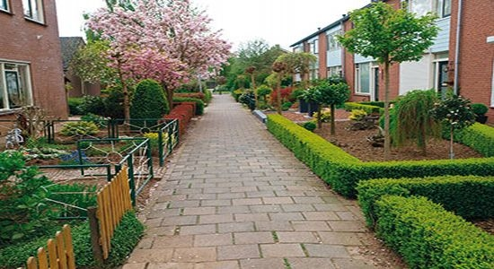
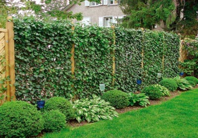

| Живопліт |
|
Як театр з вішалки, так присадибна ділянка починається з огорожі. У одних це металева сітка, у інших - дерев’яна або цегляна огорожа, але найпривабливішим є живопліт. На ділянці його можна використовувати і для внутрішніх огорож, наприклад для зорової ізоляції господарських споруд, виділення куточка відпочинку. Він захистить від токсичних викидів автотранспорту і шуму, очистить повітря від пилу, допоможе створити на ділянці особливий мікроклімат, а ще "підкреслити" ландшафтний дизайн.
Що ж таке живопліт?
 Це лінійні насадження з дерев і чагарників, що висаджуються в один-два ряди на близькій відстані одне від одного. За висотою живоплоти можуть бути низькими – від 0,5 до 1 м, середніми – 1-1,5 - 2 м і високими – понад 2 м. Живоплоти нижчі за півметра, які застосовуються для підкреслення форми доріжок, квітучо-газонних партерів і клумб, називаються бордюрами. Живопліт може бути формованим і вільно зростаючим. Формована жива огорожа, чіткі, правильні і геометрично вивірені форми якої своїми контурами додають ділянці завершеність, створюється з дерев і чагарників, що люблять стрижку, здатних утворити щільну крону, розгалузитися і виростити на своїх гілках безліч листів. Рослина живоплоту підбирається саме за цими показниками і найчастіше є представником вічнозеленого роду (самшит, падуб, тис, туя). Зустрічаються і листопадні: бук, глід, граб, барбарис. За своєю формою живоплоти можуть бути вільно зростаючими і стриженими (формованими). Найчастіше стрижуть низькі огорожі, але нерідкі випадки митецького формування високих живоплотів. Гарно квітучі чагарники і дерева з декоративними плодами,які використовуються для створення живоплотів, стрижуть рідше (погіршується цвітіння і плодоносіння). Особливо міцними і надійними вважаються шпалерні огорожі, які одержують в результаті зв'язування і зрощування гілок дерев і чагарників. Кращий захист завжди дають стрижені огорожі, що можуть бути настільки густими, що не дозволять проникнути через них навіть дрібний тварині. Правильно вибрати рослину живої огорожі вам буде не складно, якщо ви чітко відповісте на запитання: "для якої мети вам потрібна жива огорожа?" А вже з огляду на призначення і біологічні особливості рослин, фахівці нашої фірми визначать самий прийнятний спосіб формування. Рослина живоплоту повинна бути підібрана так, щоб кожна з її форм (прямокутна, трапецієподібна або округла) відповідала поставленій меті. Не всяка рослина живої огорожі вимагає сильного формування. Це необхідно тільки для огорож з терну, глоду, бірючини, снігоягодника, тамариксу. Жива огорожа з барбарису, бука, самшиту, кизильника, бересклета японського, граба, деяких видів жимолості, піроканти, розмарину і лавролистної калини злегка підстригається з укорочуванням бічних гілочок. А огорожі з аукуби японської, кипариса і кипарисовика, ялівців, лавровишні залишають і зовсім без обрізки, лише укорочуючи гілки, що псують зовнішній вигляд.
Вільно зростаючий живопліт може з'явитися тільки у великому саду, у якому може "вільно рости і цвісти" може будь-який представник флори, а не тільки рослина живої огорожі. Вона створюється з порід, що мають природні компактні крони, що красиво цвіте і з негативною реакцією на стрижку.
   Правильно створений живоплоіт, що має презентабельний зовнішній вигляд і здатний виконувати функціональну мету, є результатом вкладення завзятої професійної праці і фундаментальних знань. Жива огорожа не повинна залишатися без догляду із самого моменту посадки, вона вимагає догляду, індивідуального підходу до рослин і формується з обліком їхніх вегетативних здібностей, а також здібностей росту.
|